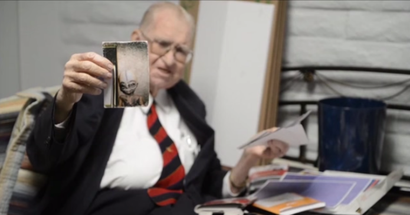
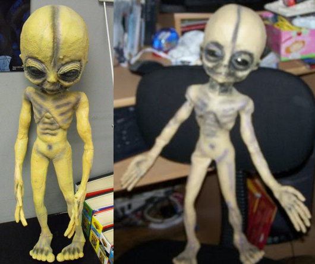

| Fact |
Cover Story |
- The storage of and reverse engineering of alien UFO's.
- The examination of living and dead extraterrestrials
recovered from crashed UFOs.
- Collaboration of the U.S. government with extraterrestrial
beings.
- Genetic engineering of human extra terrestrial hybrids,
utilizing alien specimens recovered from the area.
|
- The base was used by US Military, Air Force and Lockheed to
test and invent Air Fighters that would outfox Soviet radar
using height, stealth and speed.
- They did reverse engineer a lot of foreign technology,
including Soviet MiG fighter jet. It does not count as UFO.
- These cover ups are really good. They even cooked up a
declassified Area 51 report to support it. But kept the
activities classified.
|
- The use of the base to create and support cutting edge
technology and make war weapons inspired by UFOs.
|
- The base was used to create and support technologies to
avoid nuclear war
|
- On June 24, 1947, Kenneth Arnold reported sighting a UFO
like a saucer and the flying saucer was born. On July 8, 1947
Roswell Army Air Field issued a press release stating they had
recovered the remains of an unidentified flying object.
|
- US military's cover up story says it was a weather balloon
experiment gone wrong. Years later, declassified documents
said that the object recovered at Roswell was actually a
balloon created for a surveillance program called Project
Mogul. Another cover up.
|
The former Lockhead scientist showing image of an alien, he
interacted with.
 |
The government created an alien doll to debunk Bushman's
confessions.
 |